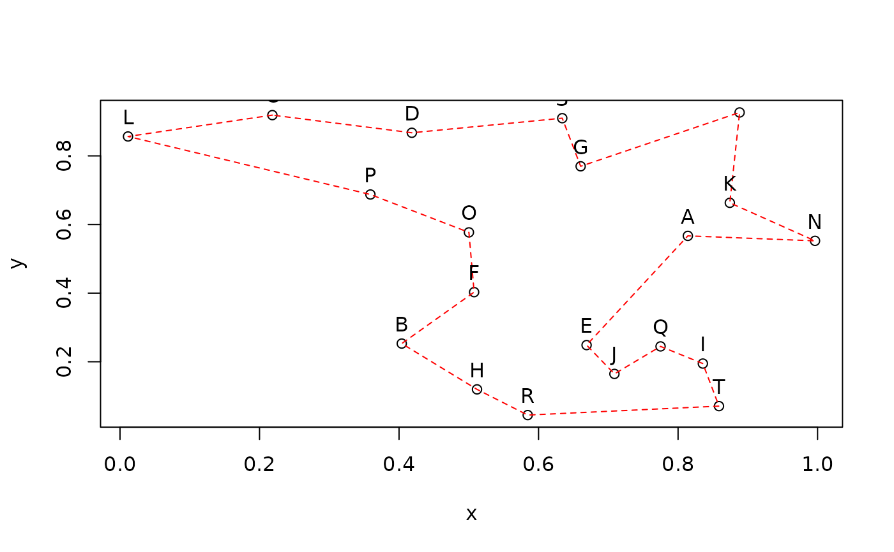
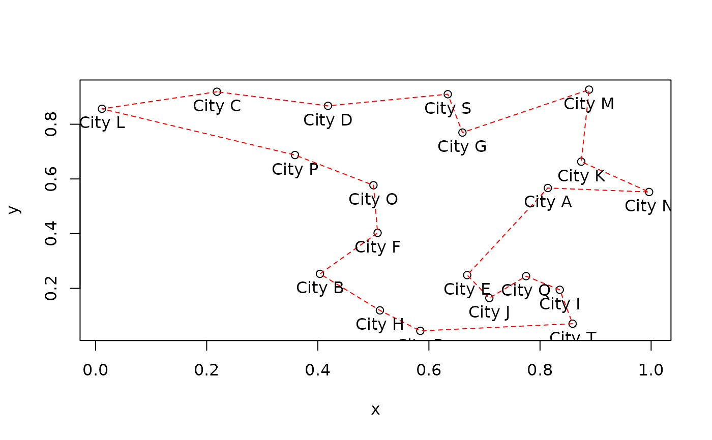

Constructor to create an instance of a Euclidean traveling salesperson problem (TSP) represented by city coordinates and some auxiliary methods.
Usage
ETSP(x, labels = NULL)
as.ETSP(x)
# S3 method for class 'matrix'
as.ETSP(x)
# S3 method for class 'data.frame'
as.ETSP(x)
# S3 method for class 'ETSP'
as.TSP(x)
# S3 method for class 'ETSP'
as.matrix(x, ...)
# S3 method for class 'ETSP'
print(x, ...)
# S3 method for class 'ETSP'
n_of_cities(x)
# S3 method for class 'ETSP'
labels(object, ...)
# S3 method for class 'ETSP'
image(x, order, col = gray.colors(64), ...)
# S3 method for class 'ETSP'
plot(x, y = NULL, tour = NULL, tour_lty = 2, tour_col = 2, labels = TRUE, ...)Arguments
- x, object
an object (data.frame or matrix) to be converted into a
ETSPor, for the methods, an object of classETSP.- labels
logical; plot city labels.
- ...
further arguments are passed on.
- order
order of cities for the image as an integer vector or an object of class TOUR.
- col
color scheme for image.
- tour, y
a tour to be visualized.
- tour_lty, tour_col
line type and color for tour.
Value
ETSP()returnsxas an object of classETSP.n_of_cities()returns the number of cities inx.labels()returns a vector with the names of the cities inx.
Details
Objects of class ETSP are internally represented as matrix
objects (use as.matrix() to get the matrix object).
See also
Other TSP:
ATSP(),
Concorde,
TSP(),
TSPLIB,
insert_dummy(),
reformulate_ATSP_as_TSP(),
solve_TSP()
Examples
## create a random ETSP
n <- 20
x <- data.frame(x = runif(n), y = runif(n), row.names = LETTERS[1:n])
etsp <- ETSP(x)
etsp
#> object of class ‘ETSP’
#> 20 cities (Euclidean TSP)
## use some methods
n_of_cities(etsp)
#> [1] 20
labels(etsp)
#> [1] "A" "B" "C" "D" "E" "F" "G" "H" "I" "J" "K" "L" "M" "N" "O" "P" "Q" "R" "S"
#> [20] "T"
## plot ETSP and solution
tour <- solve_TSP(etsp)
tour
#> object of class ‘TOUR’
#> result of method ‘arbitrary_insertion+two_opt’ for 20 cities
#> tour length: 3.898495
plot(etsp, tour, tour_col = "red")

# plot with custom labels
plot(etsp, tour, tour_col = "red", labels = FALSE)
text(etsp, paste("City", rownames(etsp)), pos = 1)
